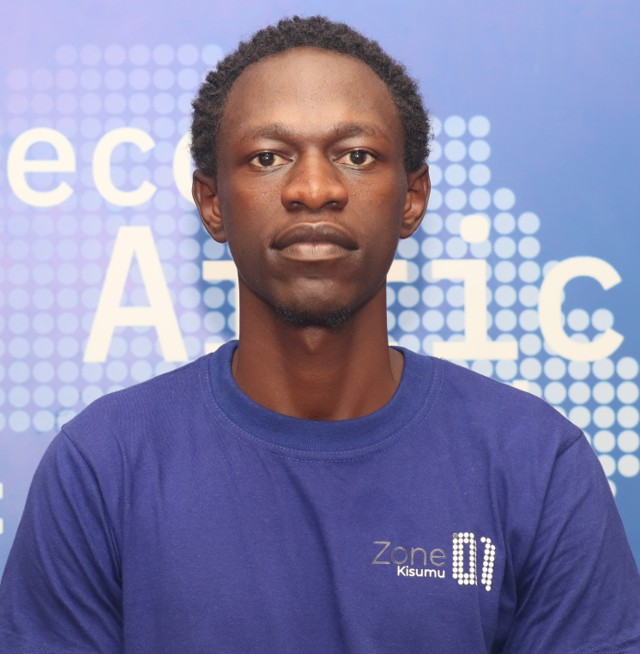
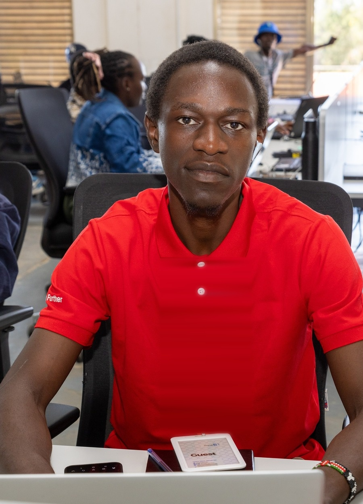

hello,
I'm Jeff
Ronnie.
Networks graduate from the Technical University of Kenya, now writing Go at Zone01 Kisumu and specializing in cloud and DevOps.

Where it started.
Networking fundamentals first, then a bootcamp built to turn that theory into shipped software.
Lenana School
A national boys' secondary school in Karen, Nairobi, one of Kenya's oldest and most competitive. It's where a strong love for computing took root, and I excelled brilliantly in it.
Technical University of Kenya
Communication and Computer Networks: protocols, systems design, and how packets actually move.
Zone01 Kisumu
A one-year, project-based coding bootcamp. Go and JavaScript first, then a specialization in cloud and DevOps, AI, blockchain, or full-stack web.
What I build with,
where I'm headed.
Decided on DevOps at Zone01, building on a networking foundation that runs through everything here.
Backend & Go
Building REST APIs, CLI tools, and network scanners in Go, with a growing JavaScript toolkit.
Cloud & DevOps
Specializing in cloud infrastructure and DevOps practice at Zone01 Kisumu.
Cloud Infrastructure
Chosen specialization: designing and provisioning cloud environments.
Infra Automation
Scripting and tooling to automate deployment and infrastructure tasks.
Network Security
Where my networking background comes in: scanning, auditing, securing live networks.
Containers & CI/CD
Building toward containerized, pipeline-driven delivery as DevOps skills grow.
Technical skills
Soft skills
- Detail-orientedCatches the small inconsistencies that break trust in a system, before they ship.
- Clear communicatorSays exactly what's wrong and what good looks like, no guessing required.
- High standardsIterates until something is actually right, not just done.
- Resilient under setbacksRebuilds from scratch without losing momentum when work gets lost or breaks.
Two tools, one
networking instinct.
Both started as the same question: what is actually running on this network, and is it safe?
Sentry
A two-layer network security platform for Kenyan SMEs (Saccos, hospitals, hotels, schools), simplified so an owner with no technical background can understand what threat it poses to their system, and validated by catching exposed routers on live networks.
Camera-04 23/tcp open telnet Till-PC 3389/tcp open rdp Router-GW 22/tcp open ssh NAS-01 445/tcp open smbfix first: telnet exposed
Port Scanner & Network Monitor
Built in Go: scans a network for live devices, open ports, and running service versions, forming the base for a full Nmap-style tool for Kenyan SMEs.
192.168.1.1 22/tcp open OpenSSH 192.168.1.1 80/tcp open nginx 192.168.1.7 445/tcp open SMB
The route so far.
Three hops: where the thinking started, where the building is happening, and where it's heading.
Networking at TU Kenya
TCP/IP, routing and switching, subnetting, and protocol-level troubleshooting, the fundamentals everything after this builds on.
Go at Zone01 Kisumu
Goroutines and channels, raw sockets, REST APIs, and CLI tooling, the skills behind the scanners and servers built here.
Cloud and DevOps
Linux administration, Docker, CI/CD pipelines, and infrastructure as code, the next layer on top of a networking foundation.

Run a command.
Say hello.
Open to conversations about cloud, DevOps, and network security work, or just a question about Sentry.